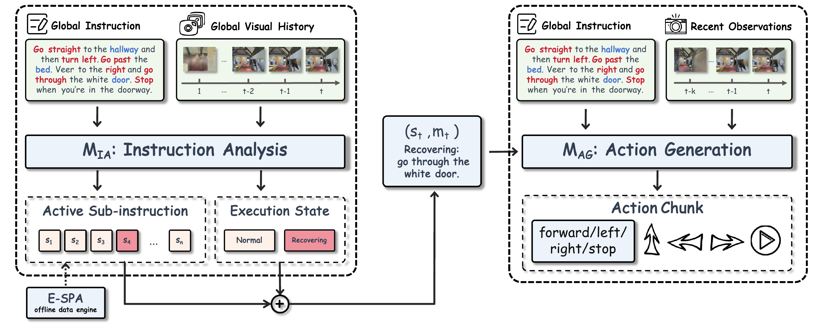

Approach

Instruction Analysis Module (MIA)
MIA receives the full route instruction and visual history. It predicts which sub-instruction is currently active and whether the agent is in a normal or recovering execution state.
Action Generation Module (MAG)
MAG conditions on the explicit progress state and recent observations to generate local action chunks. This separates the question of which step to follow from how to execute that step.
E-SPA and level-separated correction
E-SPA aligns fine-grained sub-instructions with contiguous trajectory segments without additional manual temporal labels. State-level corrective supervision is used for semantic progress, while direct action supervision is reserved for repeated local execution failures.